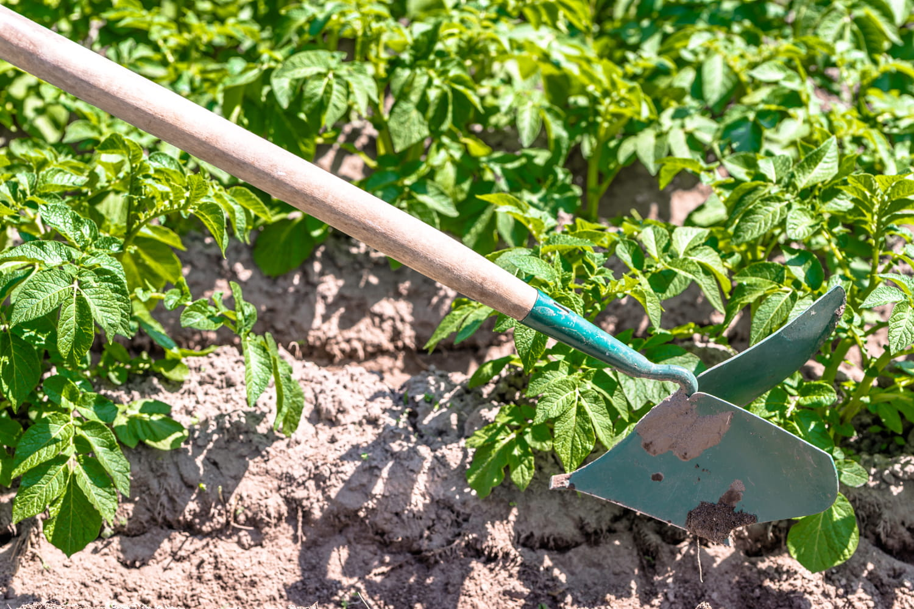
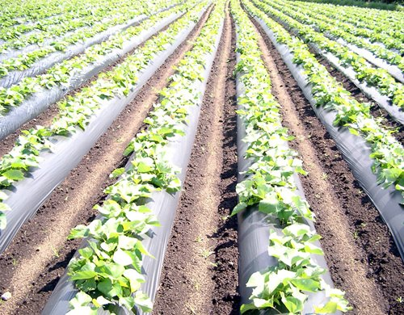
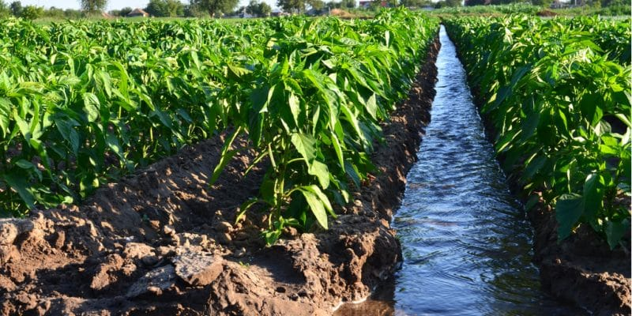

Que faire en cas de retard/ absence de pluie ?

Irrigation
- Irrigation par bassin:
Luzerne,bananier, riz,tabac - Irrigation par selons:
Soja, tomate, vigne, blé - Micro-irrigation ou irrigation goutte à goutte:
Légumes, fruits, arboriculture, vigne - Irrigation par aspersion:
Cultures en ligne, de plein champ, arboriculture

Binage
- Il doit être léger et superficiel (2cm maximum)
- Travail reculant sur parcelle bien tracée et semis bien réparties
- Pour les arbres et arbustes, il faut biner en cercle (rayon de 30cm)
- Intervenir en conditions sèches (1 à 2 jours après une bonne pluie)
- Matériel bien réglé avant l’utilisation (profondeur et agressivité)
- Intervenir lors du stade jeune des plantes

Mulching
- Épandre uniformément le paillis sur le sol (7 à 10 cm)
- Paillis : assez lourd pour résister au vent pas compacts pour laisser passer l’air et l’eau
- Désherber toujours avant de couvrir la terre par du paillis
- Généralement déposé au printemps
- Arroser avant et après avoir mis le paillis, en particulier en période desécheresse